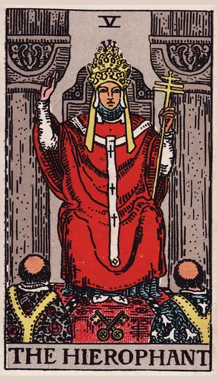

正位置教皇の正位置
キーワード：信頼・伝統・助言
恋愛
誠実な気持ちが通じ合い、信頼が深まる時です。
相手の気持ちあなたを誠実で信頼できる人だと思っているようです。
この先誠実な関係が続き、周りにも認められていきそうです。
アドバイス周りに祝福される関係を意識してみましょう。
気をつけること常識や周りの目にとらわれすぎないように。
この先誠実な関係が続き、周りにも認められていきそうです。
アドバイス周りに祝福される関係を意識してみましょう。
気をつけること常識や周りの目にとらわれすぎないように。
人間関係
信頼できる人からの助言が、関係を良くしてくれます。
相手の気持ちあなたに相談したい、頼りたいと感じているようです。
この先良い助言者やつながりに恵まれそうです。
アドバイス礼儀や感謝を大切にすると、関係が深まります。
気をつけること正論だけで相手を諭そうとしないように。
この先良い助言者やつながりに恵まれそうです。
アドバイス礼儀や感謝を大切にすると、関係が深まります。
気をつけること正論だけで相手を諭そうとしないように。
仕事・学業
先輩や上司に相談すると、道が開けやすい時期です。
この先学んだことが評価され、信頼される立場になりそうです。
アドバイス経験者の意見を素直に聞いてみましょう。
気をつけること前例にこだわって、新しい案を切り捨てないように。
アドバイス経験者の意見を素直に聞いてみましょう。
気をつけること前例にこだわって、新しい案を切り捨てないように。
お金
堅実なお金の使い方が、実を結ぶ時です。
この先信頼できる情報が、役に立ちそうです。
アドバイス詳しい人や、信頼できる窓口に相談してみましょう。
気をつけること周りに流されて、同じものを買わないように。
アドバイス詳しい人や、信頼できる窓口に相談してみましょう。
気をつけること周りに流されて、同じものを買わないように。
生活
基本に沿った、落ち着いた暮らしが合う時です。
この先安心できる暮らしが続きそうです。
アドバイス昔ながらの知恵や、家族の習慣を取り入れてみましょう。
気をつけること決まりごとを、人に押しつけないように。
アドバイス昔ながらの知恵や、家族の習慣を取り入れてみましょう。
気をつけること決まりごとを、人に押しつけないように。
今日の運勢
ルールや約束をきちんと守ると、気持ちよく過ごせる日です。
この先誰かの一言が、あなたの支えになりそうです。
アドバイス迷ったら、信頼できる人に相談してみましょう。
気をつけること決まりごとに縛られすぎて、疲れないように。
アドバイス迷ったら、信頼できる人に相談してみましょう。
気をつけること決まりごとに縛られすぎて、疲れないように。
逆位置教皇の逆位置
キーワード：形だけ・固定観念・価値観のずれ
恋愛
形にこだわりすぎて、気持ちが置き去りになりやすい時です。
相手の気持ち周りの目を気にしながら、あなたとの関係を考えているようです。
この先自分たちらしい関係の形が見えてきそうです。
アドバイス「こうあるべき」を一度手放して、二人の形を考えましょう。
気をつけること周りの意見に流されて、自分の気持ちを見失わないように。
この先自分たちらしい関係の形が見えてきそうです。
アドバイス「こうあるべき」を一度手放して、二人の形を考えましょう。
気をつけること周りの意見に流されて、自分の気持ちを見失わないように。
人間関係
価値観の違いが目につきやすい時です。
相手の気持ちあなたとの考え方の違いを、気にしているようです。
この先本音で話せる相手が見つかりそうです。
アドバイス違いを否定せず、そういう考えもあると受け止めてみましょう。
気をつけること表面的な付き合いにとどまっていないか見直して。
この先本音で話せる相手が見つかりそうです。
アドバイス違いを否定せず、そういう考えもあると受け止めてみましょう。
気をつけること表面的な付き合いにとどまっていないか見直して。
仕事・学業
古いやり方が合わなくなってきている時期です。
この先新しいやり方が認められ、流れが変わりそうです。
アドバイスやり方を見直し、自分なりの工夫を取り入れてみましょう。
気をつけること立場のある人の言葉を、うのみにしすぎないように。
アドバイスやり方を見直し、自分なりの工夫を取り入れてみましょう。
気をつけること立場のある人の言葉を、うのみにしすぎないように。
お金
お金の常識を、見直したくなる時です。
この先自分に合うお金の使い方が見つかりそうです。
アドバイス今の使い方が自分に合っているか、見直しましょう。
気をつけること根拠のない情報に、振り回されないように。
アドバイス今の使い方が自分に合っているか、見直しましょう。
気をつけること根拠のない情報に、振り回されないように。
生活
いつもの暮らし方が、合わなくなってきている時です。
この先自分らしい暮らし方が見えてきそうです。
アドバイス自分に合うやり方を、探してみましょう。
気をつけること周りの「普通」に合わせすぎないように。
アドバイス自分に合うやり方を、探してみましょう。
気をつけること周りの「普通」に合わせすぎないように。
今日の運勢
決まりごとが窮屈に感じられる日です。
この先小さな自由が、気持ちを軽くしてくれそうです。
アドバイスいつもと違う選択を、一つ試してみましょう。
気をつけること根拠の薄いうわさ話に振り回されないように。
アドバイスいつもと違う選択を、一つ試してみましょう。
気をつけること根拠の薄いうわさ話に振り回されないように。
このページの文章は、アプリ「ひとやすみタロット」の結果に使っている文章です。アプリでは、あなたの相談や、カードが出た位置（今の状況・これからの流れ・アドバイス）に合わせて、この中から文章を選びます。逆位置の読み方は逆位置のことをご覧ください。